library(ggplot2)Session 5: How can I make data visualizations with ggplot2?
A Slower Introduction to R
Yea-Hung Chen, PhD, MS
UCSF Library
Thursday, November 6, 2025
Why
Gallery
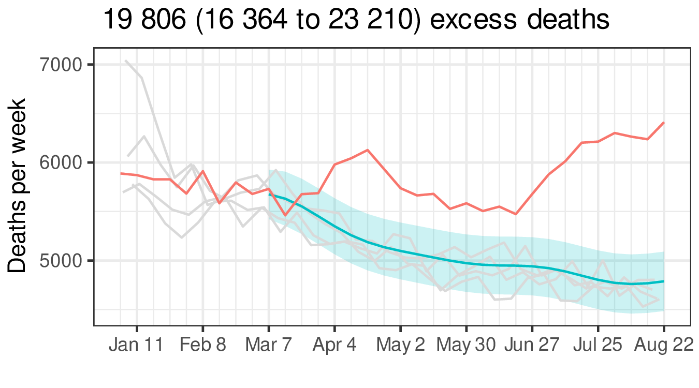
Gallery
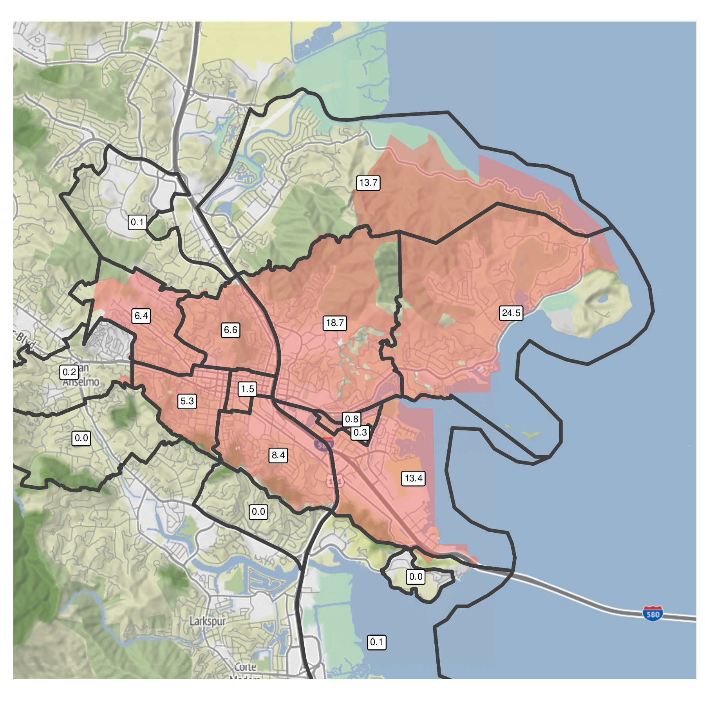
Gallery
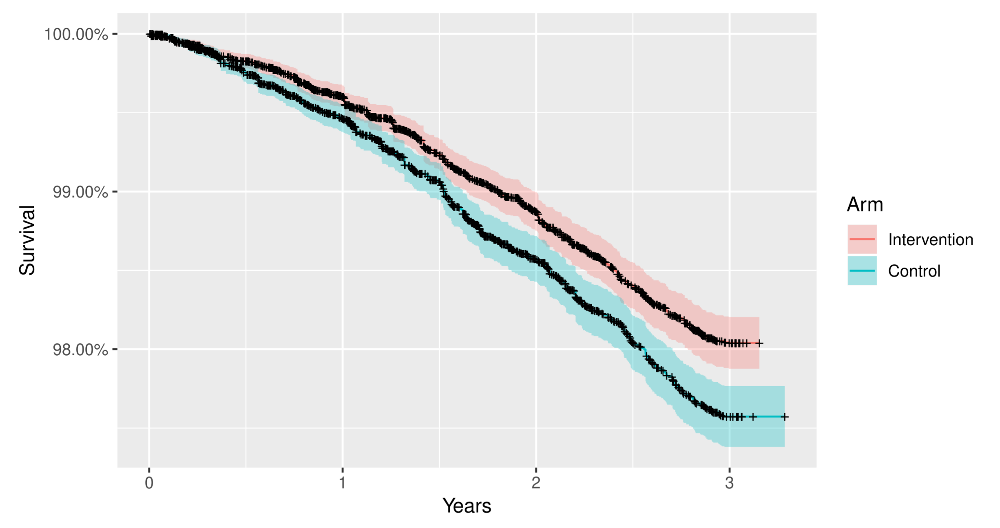
Gallery
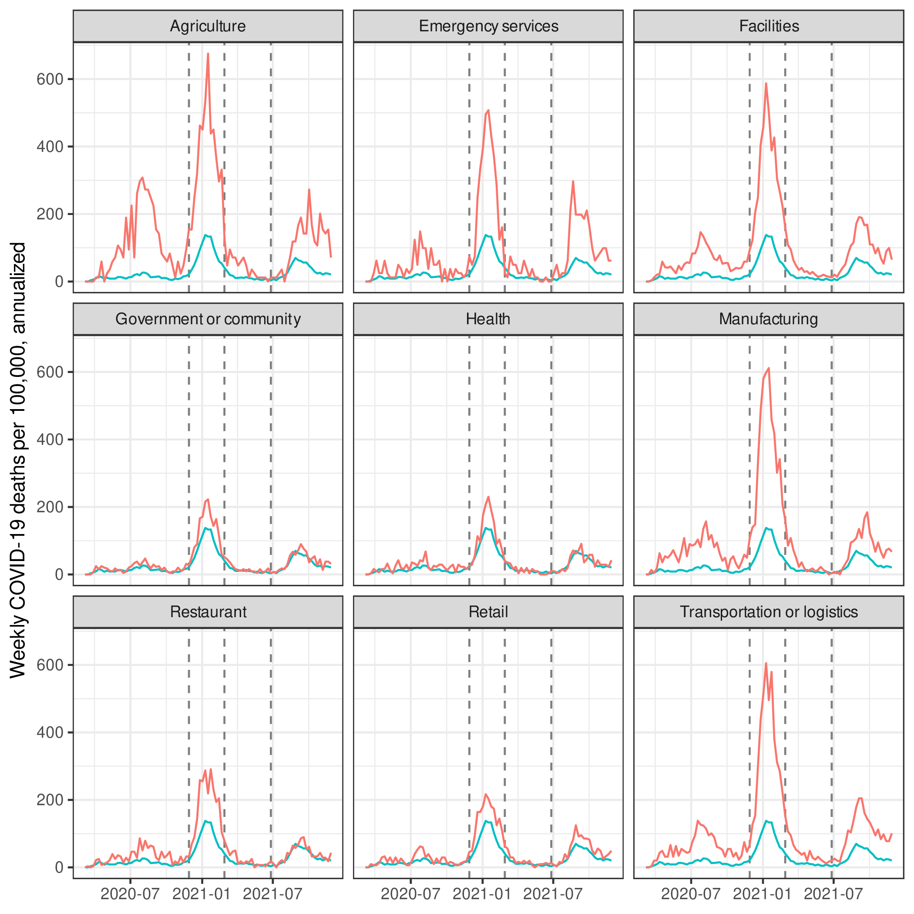
Gallery
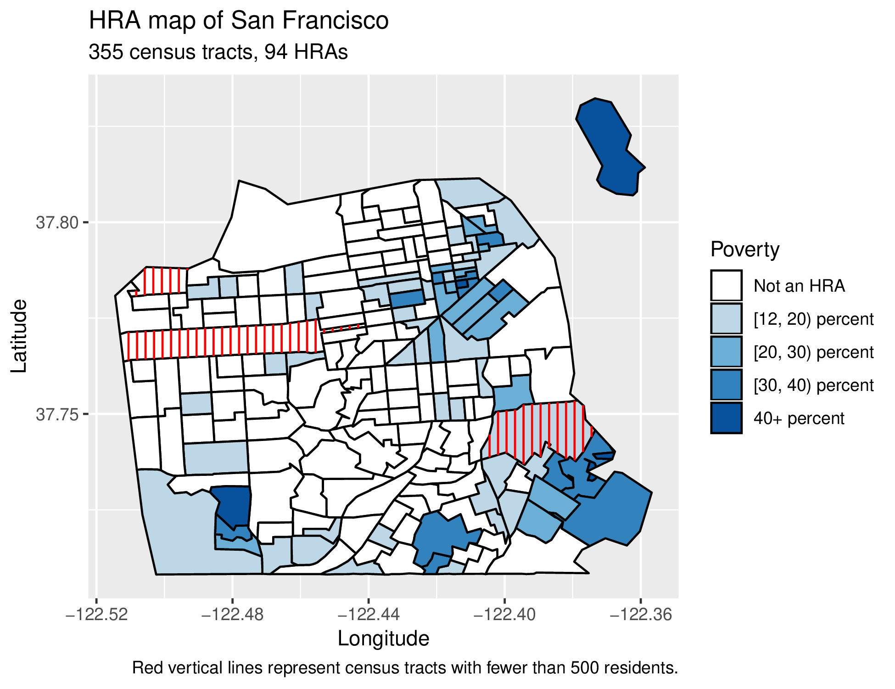
Components
Aesthetics and geometries
- to make a
ggplot2data visualization, specify 2 components:- aesthetics
- geometries
Aesthetics
- aesthetics = visual dimensions
- 3 common aesthetics are:
- x
- y
- color
- to make a
ggplot2data visualization, you must assign variables to dimensions - you might hear me refer to this as a mapping
Aesthetics: x and y

Aesthetics: x, y, and color
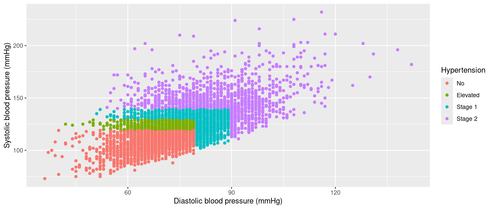
Geometries
- geometries define the type of data visualization
- common geometries are:
- density and histogram
- point
- line
- box plot and violin
Geometries: histogram
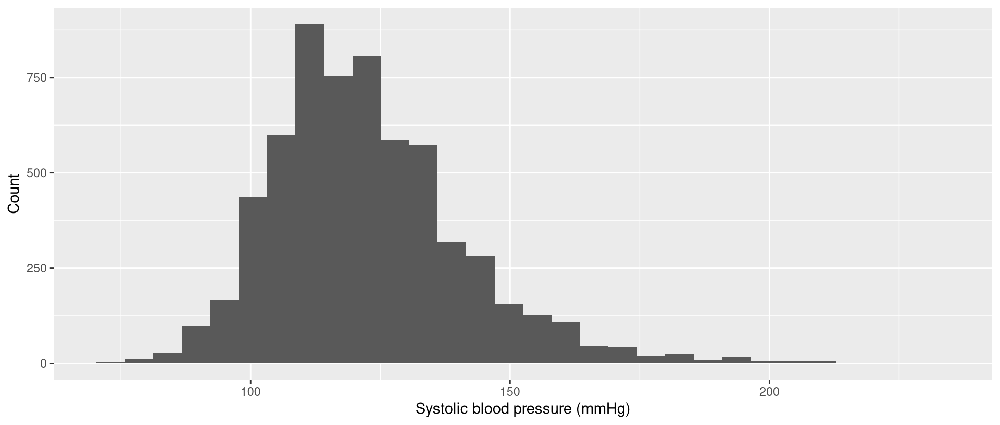
Geometries: density
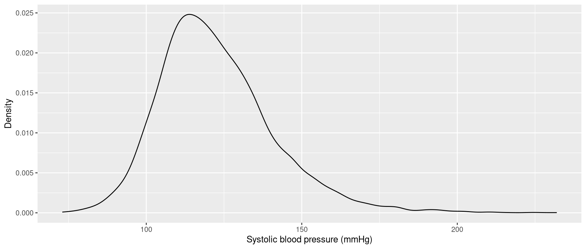
Geometries: point
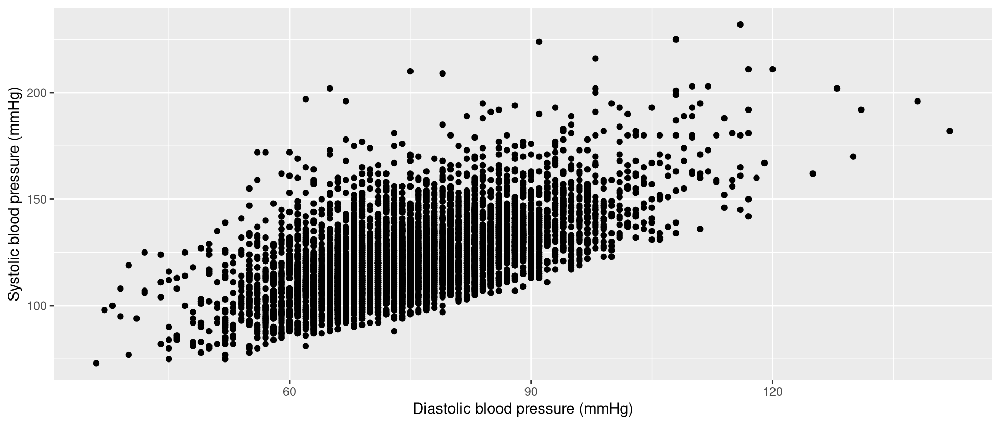
Geometries: line
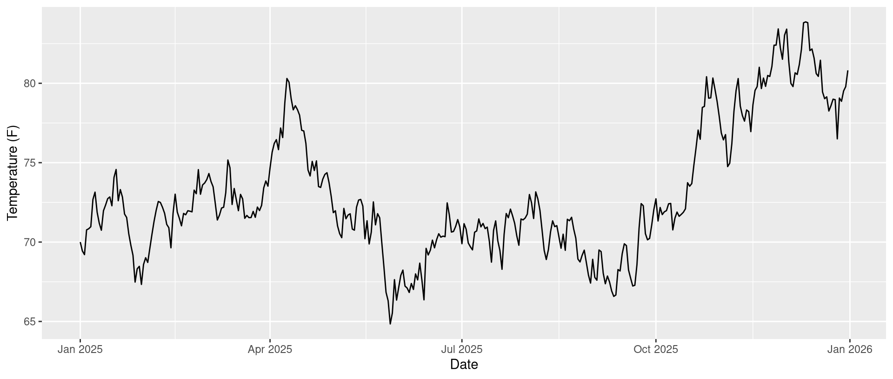
Geometries: box plot
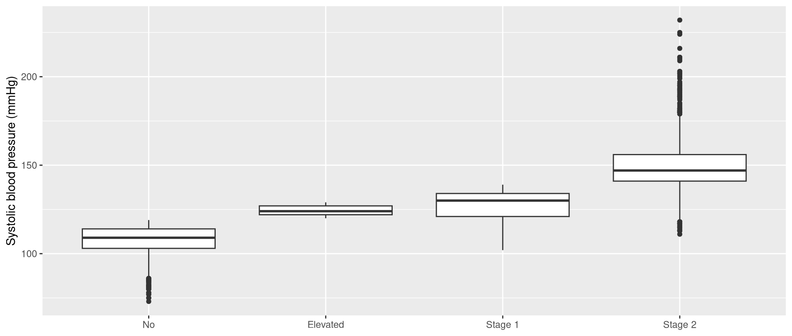
Geometries: violin plot
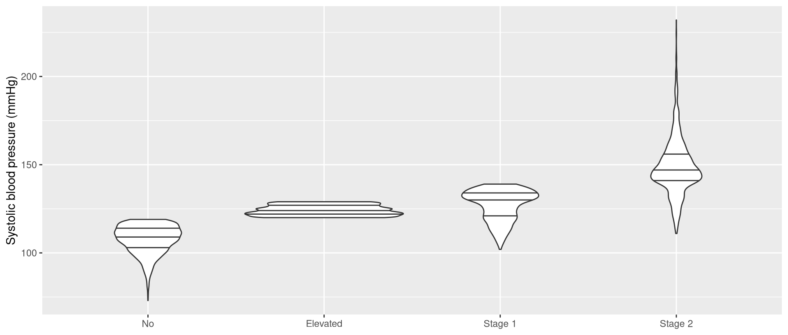
Exercise 1
Exercise 1
- for each of the following data visualizations, identify:
- the aesthetics
- the geometry
Exercise 1
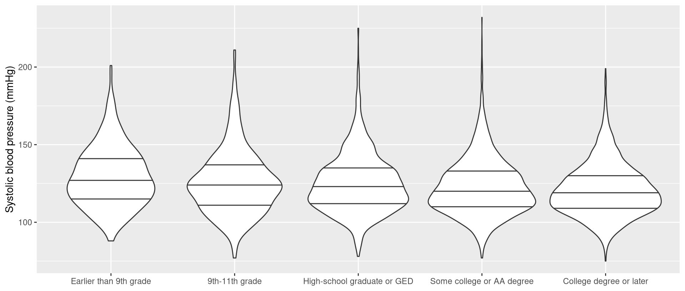
Exercise 1
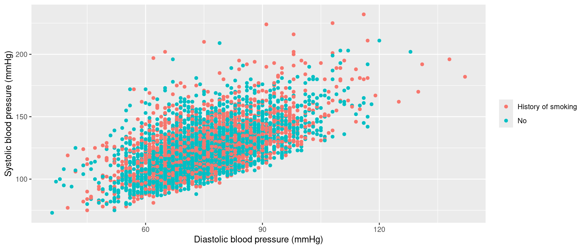
Exercise 1
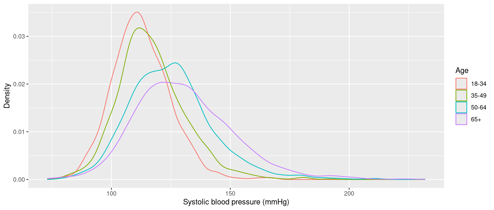
Loading packages
Loading packages
- using a cooking analogy:
- packages = cookbooks
- loading the package = taking the cookbook off the shelf
Loading packages
- to load a package, use
library() - for example, to load the
ggplot2package:
- you need to do this once per session
Loading versus installing
| action | analogy | frequency |
|---|---|---|
| installing | buying a cookbook | once ever |
| loading | taking the cookbook off the shelf | once per session |
Put it in your script
- I suggest that you put
library()code near the top of your script - for example:
Scatter plots
Systolic versus height

Systolic versus height: aesthetics
- to specify the aesthetics component, use the
aes()function, inside theggplot(nhanes,)function:
aes()function stands for aesthetic- notice the
dataargument insideggplot() datais the first argument so the argument name is optional
Systolic versus height: geometry
- the geometry for scatter plots is points
- to create scatter plots, use
geom_point()
Systolic versus height: aesthetics + geometry
- to connect the 2 components, use the plus sign:
Systolic versus height: aesthetics + geometry
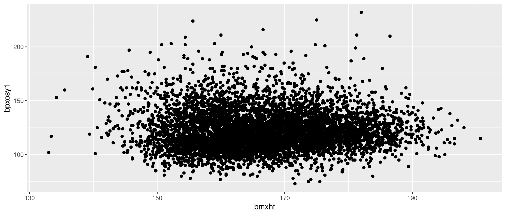
Systolic versus height: labels
- what about the labels on the x and y axes?
- to specify labels, use the
labs()function:
Systolic versus height: aesthetics + geometry + labels
- putting it all together:
- notice that there are 3 components now
Systolic versus height: aesthetics + geometry + labels
Systolic versus height: color
- to use color to represent a variable, add the
colorargument toaes() - for example, to use color to represent gender:
Systolic versus height: color
Systolic versus height: color
- to modify the legend label, add the
colorargument tolabs():
Systolic versus height: color
- putting it all together:
Systolic versus height: color
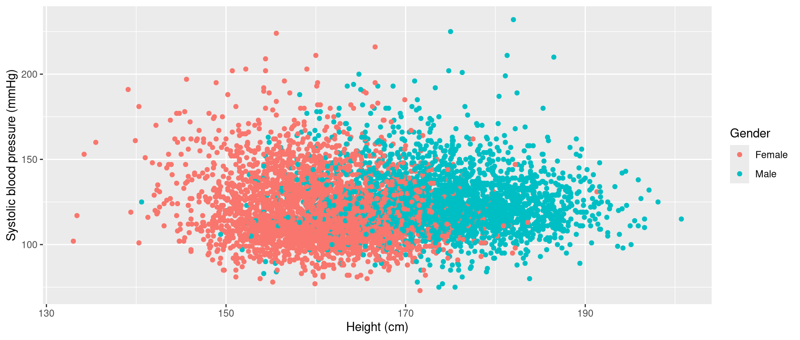
Systolic versus height: smoothers
- to add a smoother to the original scatter plot, add the
geom_smooth()geometry - for example, to add a regression line:
'lm'stands for linear modelse=FALSEremoves the default confidence band
Systolic versus height: smoothers
- putting it all together:
- the order of the geometries does matter
Systolic versus height: smoothers
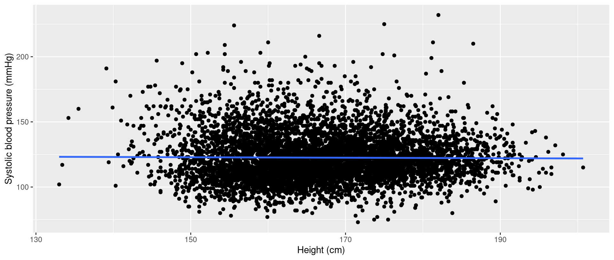
Exercise 2
Exercise 2
At the top of a new script, include code for loading the
ggplot2package and importing the data. Run your code.In your script, write code for creating a scatter plot of systolic blood pressure (
bpxosy1) versus age (ridageyr), with systolic blood pressure on the y axis. Add labels to the axes. Run your code.
Exercise 2
- Modify the above code to add a mapping of color to smoking status (
smoking). Optionally, modify the label for the legend so that the first letter ofsmokingis capitalized. Run your code.
Exercise 2
- Copy and paste the code from the second problem. Add a LOESS smoother (you can find more information about LOESS smoothers here). To do this, add
geom_smooth()with themethod='loess'argument. Also add acolorargument togeom_smooth(), using some color of your choice (see this list). For example, you could usecolor='springgreen3'. Finally, add these=FALSEargument togeom_smooth()to remove the default confidence band. Run your code.
Exercise 2
- Create a box plot of systolic blood pressure (
bpxosy1) versus hypertension (hypertension), with systolic blood pressure on the y axis. You can define the aesthetics component in a similar way as you did above. For the geometry component, usegeom_boxplot()instead ofgeom_point(). Add labels to the axes usinglabs(). Run your code.
Exercise 2
- Create a violin plot of systolic blood pressure (
bpxosy1) versus hypertension (hypertension), with systolic blood pressure on the y axis. You can replacegeom_boxplot()above withgeom_violin(). Add labels to the axes usinglabs(). Run your code.
Histograms
Histograms
- notice that you do not need to include a
yargument inaes()
Histograms
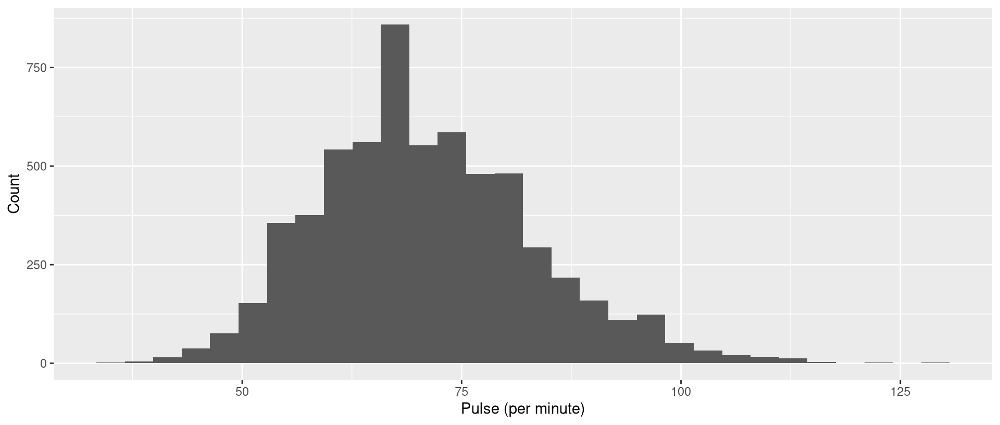
Density plots
- to make a density plot, use
geom_density()instead ofgeom_histogram():
Density plots
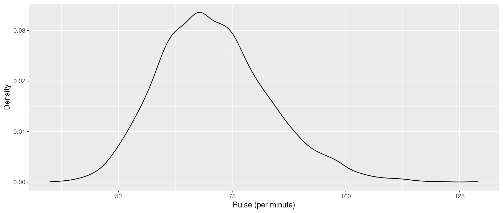
Overlying the density on a histogram
- by default, the y axis of
geom_histogram()is counts - to get histograms on the density scale, add a
yargument toaes():
- the order of the geometries does matter!
Overlying the density on a histogram
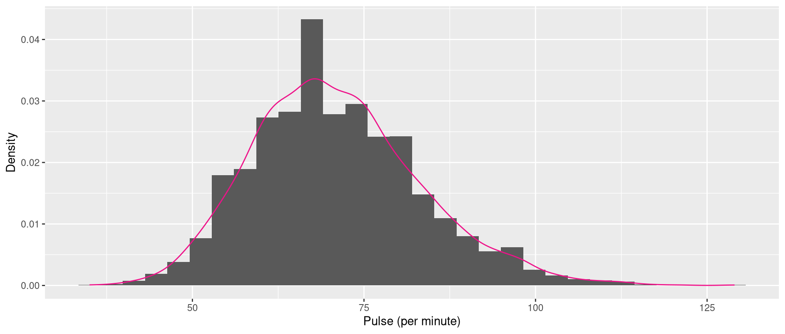
Overlying the density on a histogram
- to change the thickness of the density line, add the
sizeargument togeom_density():
Overlying the density on a histogram
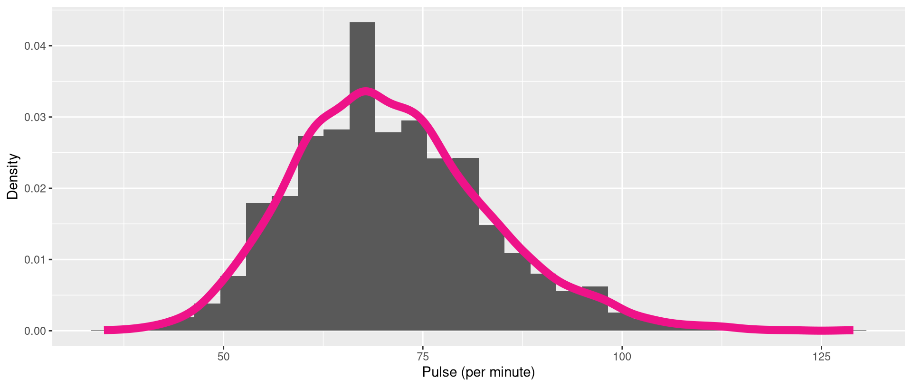
Faceting
Faceting
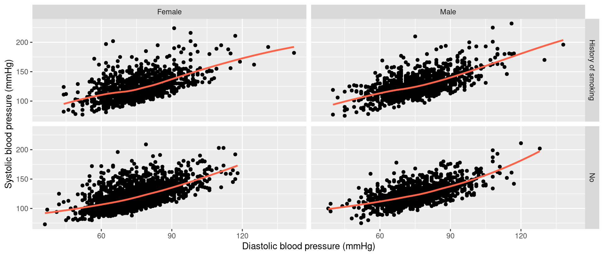
Faceting
- the prior data visualization stratifies the data by smoking status and gender
- it creates a scatter plot for each stratum
Faceting
- to facet, add the
facet_grid()component:
facet_grid()uses formula notation- here,
smokingis listed first, meaning that it will define the rows
Exercise 3
Exercise 3
In your script, write code for creating a density plot of diastolic blood pressure (
bpxodi1), with color defining hypertensionhypertension. Add labels to the axes. Optionally, change the size of the density line. Run your code.Copy and paste the above code. Add faceting by gender (
gender), with gender defining the columns. For the row dimension you can just type a period (.).
Saving visualizations
How can I save my data visualizations?
- as I’ve mentioned, you can save data visualizations using RStudio’s buttons, but this is not easily reproducible
- so, I suggest that you use scripts to save data visualizations
- when using code (in scripts) to save data visualizations, your computer will, by default, put the files in something called the working directory
What is a working directory?
- working directory = the folder that your computer will default to when looking for, and saving, files
- using the cooking analogy, the working directory is kind of like the physical address of whatever kitchen you are working in
How should I be using working directories?
- you can pick (set) the working directory
- and, I recommend that you set the working directory to be the folder that corresponds to the project you are working on at the moment
How can I figure out what the current working directory is?
- to figure out what the current working directory is, examine the top of the Console pane in RStudio:
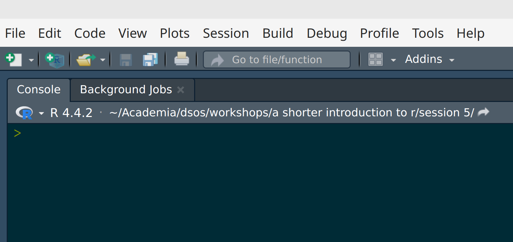
How can I figure out what the current working directory is?
- the default working directory on a Mac computer might be
~/, which is your home directory
How can I figure out what the current working directory is?
- equivalently, use
getwd():
How can I set the working directory? Method 1
- if you have already a script in your project folder, and you want to set that folder as the working directory:
- close RStudio if it’s open
- from your Finder (MacOS) or File Explorer (Windows), open your script
How can I set the working directory? Method 2
- use RStudio’s menu: Session > Set Working Directory > Choose Directory…
Should I put code for setting the working directory in my script?
- some people do that, and I think that’s fine
- I do not, partly because:
- I may later reorganize my files or folders
- I may share my code with other people
Saving data visualizations
# define the data visualization
gg<-ggplot(nhanes,aes(x=bmxht,y=bpxosy1,color=gender))+
geom_point(color='gray')+
geom_smooth(method='lm',se=FALSE)+
labs(x='Height (cm)',
y='Systolic blood pressure (mmHg)',
color='Gender')
# output the data visualization
cairo_pdf('my figure.pdf',width=6,height=4)
print(gg)
dev.off()Saving data visualizations
- start recording ⏺ using one of these functions:
cairo_pdf()orpdf()png()jpeg()ortiff()
- display your data visualization, possibly by using
print() - stop the recording ⏹ using
dev.off()
Saving data visualizations
- for
cairo_pdfandpdf(), the width and height are, by default, in inches - for most other functions, like
png(), the width and height are, by default in pixels
Exercise 4
Exercise 4
Create a folder on your computer for this workshop series (or today’s session), if you haven’t already.
Set the working directory to that folder, using either method I mentioned.
Exercise 4
- In your script, copy and paste code for one of your data visualizations. Modify the code so that the data visualization will be output to a file in your working directory. Run your code. Verify that the data visualization was in fact saved.